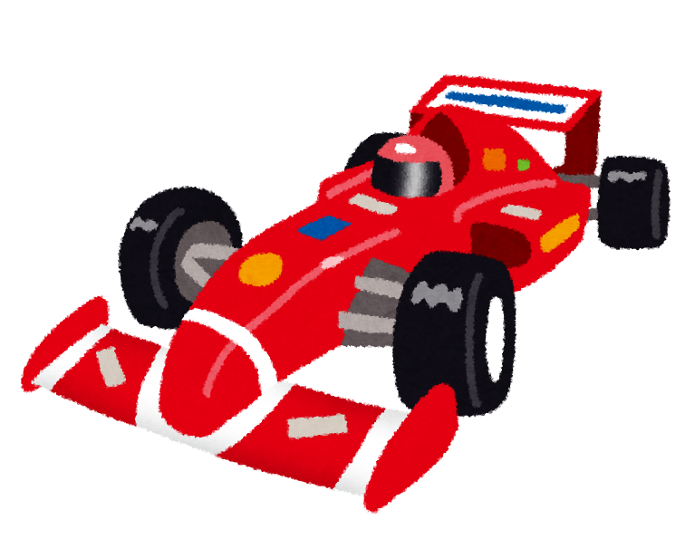
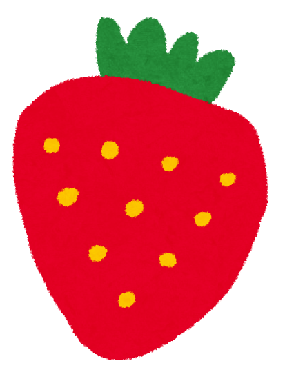
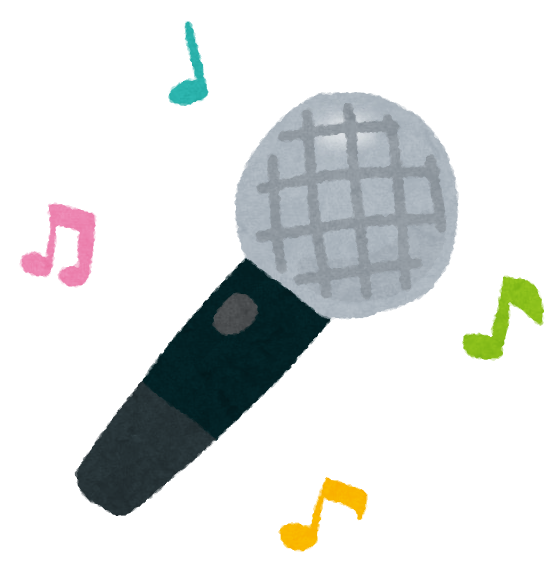

名前: Nina Makino Hillman
ヒルマン・ニナ / 牧野仁菜
誕生日: 2005年2月27日 27がニナに聞こえるから！
キャッチフレーズ: NiziUの明るい末っ子 ♡
血液型: O
メンバーカラー: 青 (Pantone 293C)
身長: 推定171cm+?
5' 7" ...for the Americans :)
MBTI: INFP

・歌を歌う Vocal queen slayyy!
・音楽を聴く "Music is my life!"
・ミュージカル鑑賞 ニナはミュージカル出身だからね！
・メンバーとハグをする
・Harry Potter "Wingardium LeviOsa"
・F1鑑賞 鈴鹿GP見に行ってたよ！

・カレーライス🍛
・牛乳🥛
・コーヒー☕️ 大人の味覚〜
・チーズバーガー🍔
・フライドポテト🍟
・イチジク Uの時期にめっちゃ言ってたの懐かしい！
・シャインマスカット
・さくらんぼ🍒 Seattle gurl let's go!
・イチゴ🍓 da best fruit🔥

楽器🎷
・ピアノ🎹
・ギター
・天使のような歌声💙
Favorite Artist
・Ariana Grande
初めて買ったCD
・Lady Gaga
K-Popに興味を持つきっかけとなった曲
・As If It's Your Last - BLACKPINK
好きな曲
・THATS WHAT I WANT - Lil Nas X
・Panorama - IZ*ONE
・Half A Man - Dean Lewis
・Back to December - Taylor Swift
・Siesta - Weki Meki
・Can't Control Myself - Taeyeon
・INVU - Taeyeon
・Royal - IVE
・Stay Young - Maise Peters
・The Rose Song - Olivia Rodrigo
・미리 메리 크리스마스 (Merry Christmas in Advance) - IU